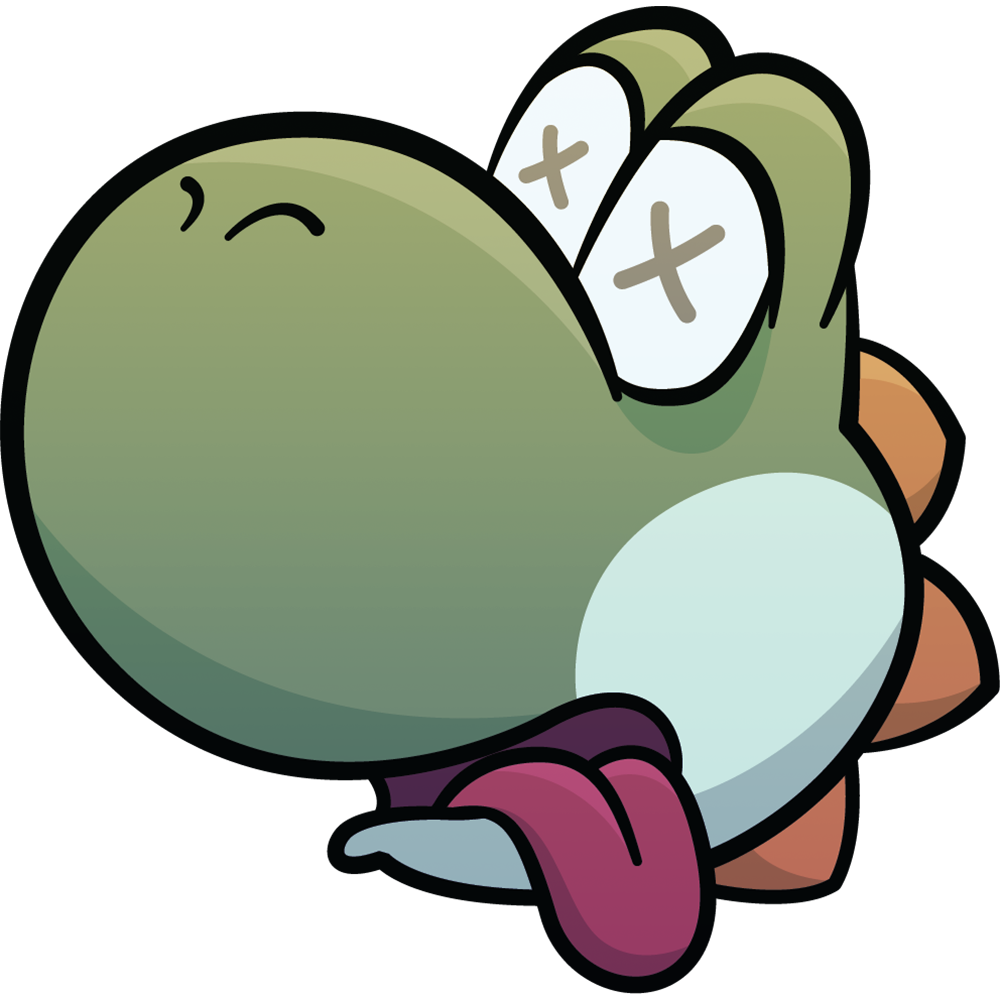
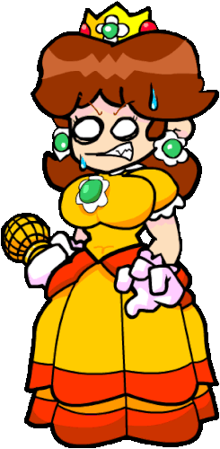
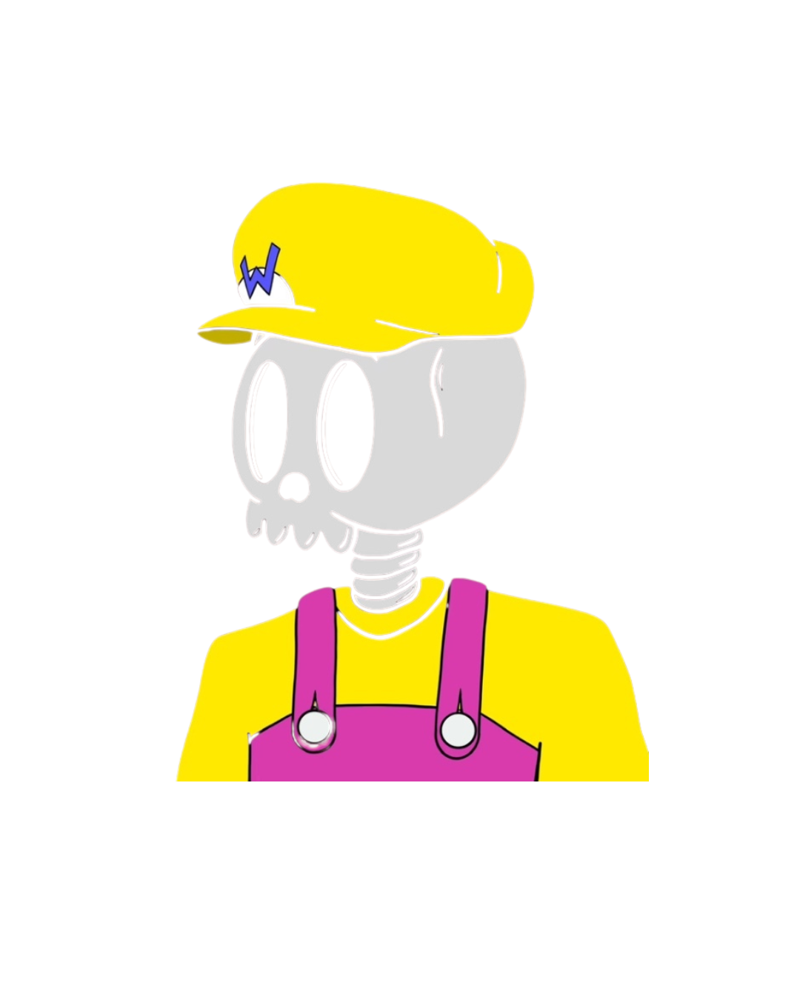

Memorial
A digital Memorial to the Lost Gamers will be featured on the site, honoring those who have spent countless hours chasing fictional goals without questioning the deeper motivations behind their actions. These gamers, whose dedication and passion are often overlooked, have played vital roles in shaping the world of gaming, contributing to its culture and evolution. This interactive space will allow visitors to reflect on their own experiences and share how games have shaped their perspectives, influenced their lives, or even helped them cope with difficult moments. Through this digital memorial, we aim to celebrate the profound impact gaming has had, not just as entertainment, but as a meaningful and transformative force in many lives. Visitors will also have the opportunity to contribute their own stories, thoughts, and memories, creating a rich tapestry of voices that acknowledge the unique journeys of gamers everywhere.
Yoshi
Yoshi goes absolutely deranged over the Soda Rollin' Refresh — the moment he hears that can crack open, his eyes widen, his legs start tapping, and he launches into a chaotic spin of pure joy. It's like he’s been waiting his whole life for that fizzy burst of flavor — chirping, dancing, and zooming around like a sugar-crazed tornado.
Daisy
Princess Daisy goes full maniac mode the second she gets a taste of Soda Rollin' Refresh — tossing her crown, laughing way too loud, and power-sliding across the floor like it’s the final lap of Rainbow Road. It’s chaos in heels.
Wario
Wario loses his mind over Soda Rollin' Refresh — he pops the can with a greasy grin, guzzles it like gold, then lets out a burp so powerful it echoes across Mushroom Kingdom. Suddenly he starts coming out of clothes, drooling like a caveman.